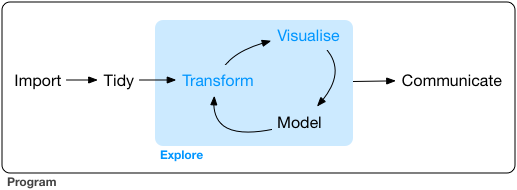

1 + 1[1] 2Reproducible research and digital landscapes
We need to ensure our foundations are solid
Data is the backbone of these developments
But data without knowledge will not suffice
We are well placed to work at this interface
The target for this week: Sample report and workflow
Our first line of code:
1 + 1[1] 2

is.vector(1) # check whether this is a vector[1] TRUEclass(1) # check what class this vector is[1] "numeric"is.vector("Hello IRRI")[1] TRUEclass("Hello IRRI")[1] "character"is.vector(c(1,2))[1] TRUEc("HELLO IRRI", 1,2)[1] "HELLO IRRI" "1" "2" class(c("HELLO IRRI", 1,2))[1] "character"x <- c(1,2,3)
print(x)[1] 1 2 3For our purposes, everything else are basically just construction of different vectors of varying levels of complexity.
We can also use attributes. These are things like the number of dimensions, or the names of columns or rows.
For example a data.frame is similar to an excel sheet. It just a collection of vectors (columns) of the same length, with a name for each column.
farmer_name <- c("Hari","Virender","Anton")
yield_tha <- c(10.3,5.3,2.3)
n_rate <- c(30,50,100)
survey <- data.frame( #here we ask to create a data frame. And assign it to survey
name = farmer_name,
yield = yield_tha, # Here we create a column name "yield" and request yield_tha as values
n = n_rate # the same for n_rate
)
survey #ask to print the object survey name yield n
1 Hari 10.3 30
2 Virender 5.3 50
3 Anton 2.3 100dim(survey)[1] 3 3colnames(survey)[1] "name" "yield" "n" farmer_name[1] # get the first farmner name [1] "Hari"farmer_name[2] # get the second farmer name[1] "Virender"farmer_name[c(1,2)] # get both names[1] "Hari" "Virender"survey[1,1] #subset the first entry in the first column[1] "Hari"survey[1,] #extract the entire first row name yield n
1 Hari 10.3 30survey[,3] # extract the entire last column[1] 30 50 100survey[,"yield"] #extract the column with the name "yield"[1] 10.3 5.3 2.3survey$name #get the names column[1] "Hari" "Virender" "Anton" survey$n_productivity <- survey$yield / survey$n # calculate the n producitivty
#and assign to new column with name n_productivity
survey name yield n n_productivity
1 Hari 10.3 30 0.3433333
2 Virender 5.3 50 0.1060000
3 Anton 2.3 100 0.0230000plot(survey$yield~survey$n,ylab = "Yield",xlab="N rate")library(ggplot2)
ggplot(data = survey)+ #start a ggplot and use survey for data input
geom_point(aes(x=n, y=yield,color=name))+ #define aes(thetics), x axis, axis, color
theme_classic()+ #use classic theme for cleaner plot
scale_x_continuous(name = "N rate") #adjust the x axis. Name it N rate.fit <- lm(data = survey, formula = yield~n)
fit
Call:
lm(formula = yield ~ n, data = survey)
Coefficients:
(Intercept) n
12.1974 -0.1038 ?meanOff to the real fun! And using your own examples.
You can download all of the course materials incl. this deck from this github repo: https://github.com/AntonUrfels/data-works. You can also look at them at the link of the corresponding website https://antonurfels.github.io/data-works/.